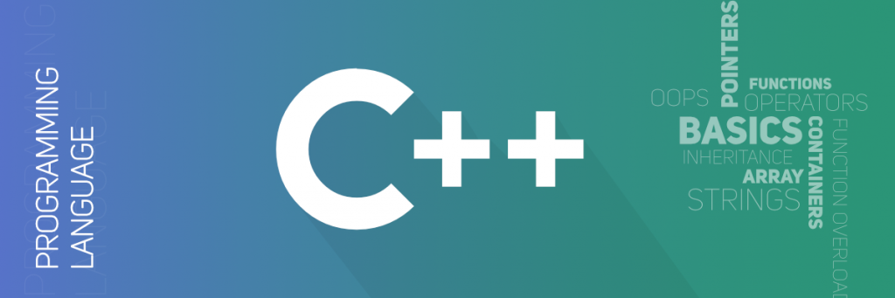

Software Engineering Projects
Stock Market Investment League Simulator
January 2019 - May 2019

Goal: To Develop a fantasy game that allows aspiring investors to learn how to trade financial stocks.The game supports trading activities and simulates a broker who pretends to execute trading orders.
Actions:
As a group we were able to developed an interface that simulates role of broker that executes educated trades as well as simulates a competition aspect in order to make the simulator a game
We essentially created a fantasy league but instead of the statistics in a sporting game, we created a league with all types of functionality that uses actual stock data, including buy/sell stocks, trading, different game types, multiple leagues, cross platform functionality, security features and real data as well as gearing the basis of the simulator to be educational in its function, teaching young investors how to operate in the market
Our software was designed to utilize SQL databases, big data analysis, .NET programming, Alexa Integration, and Microsoft's Azure to result in a website, and functional iOS and Android applications
However it doesn't stop there we were able to implemented desktop ticker hardware, using data from databases that shows how your stocks are doing in real time
I also headed and organized all documentation and presentation of progression through development cycle, utilizing symbolic representation of software life-cycle models
View and Download the Project
Github Link - Including Reports
Portfolio Website
January 2019 - May 2019

Goal: Create a Portfolio Website and Learn about HTML, CSS, and Java Script
Actions:
I needed a place to store all my projects and for people to get to know me better and realize that I am much more than a resume
I am a programmer at heart and a person above all, I love learning and educating myself on all languages and types of problem solving and my hopes in hosting this website was to spark more connection and conversation about different projects and methods of problem solving
I decided to teach myself javascript, html, and css, in order to program this entire website
Please feel free to look at the programming of this website and see how I did it, I am always open to suggestions!
View and Download the Project
Github Repository Link
Bank System Project
January 2019 - May 2019
Goal: To Created a system that models a bank account using C++ features
Actions:
I was able to draft 25+ different functions and 500+ lines of code across numerous files to use in tandem to implement a functional bank account simulator, focusing on C++ OOP features, including abstraction, encapsulation, inheritance, and polymorphism
Created and implemented different functions inside the system to transfer, check, withdraw and deposit money inside of the bank account
Used an object oriented design startegy to create the structure for the overall program, and once implemented I then worked to optimize the sorting algorithms that sifted through the data given to us to account for time and space complexity.
This was my first introduction into object ortiened design and I was so greatful it was done inside my most familiar language C++
View and Download the Project
Github Repository Link
Bank & Stock System Project
January 2019 - May 2019
Goal: To Created a system that models a stock market account and can communicate with previous bank account project using C++ features
Actions:
This was my second project focused around object oriented design also in C++ and I was able to draft 50+ different functions and 1000+ lines of code across numerous files to use in tandem to implement a functional stock market account simulator that communicated with a bank account, focusing on C++ OOP features, including abstraction, encapsulation, inheritance, and polymorphism
I was also able to create and implemented different functions inside the system to buy/sell stock, and display current portfolio, transaction history, and current price for stock model.
Used an object oriented design startegy to create the structure for the overall program, then I drafted these functions with real stocks and had it operate in real time to ensure that the system was functional and efficient.
Other than the obvious ability to practice OOP concepts I also took this project as an oppoturnity to displayed expertise in pointers, vectors, passing functions and recursion.
View and Download the Project
Github Repository